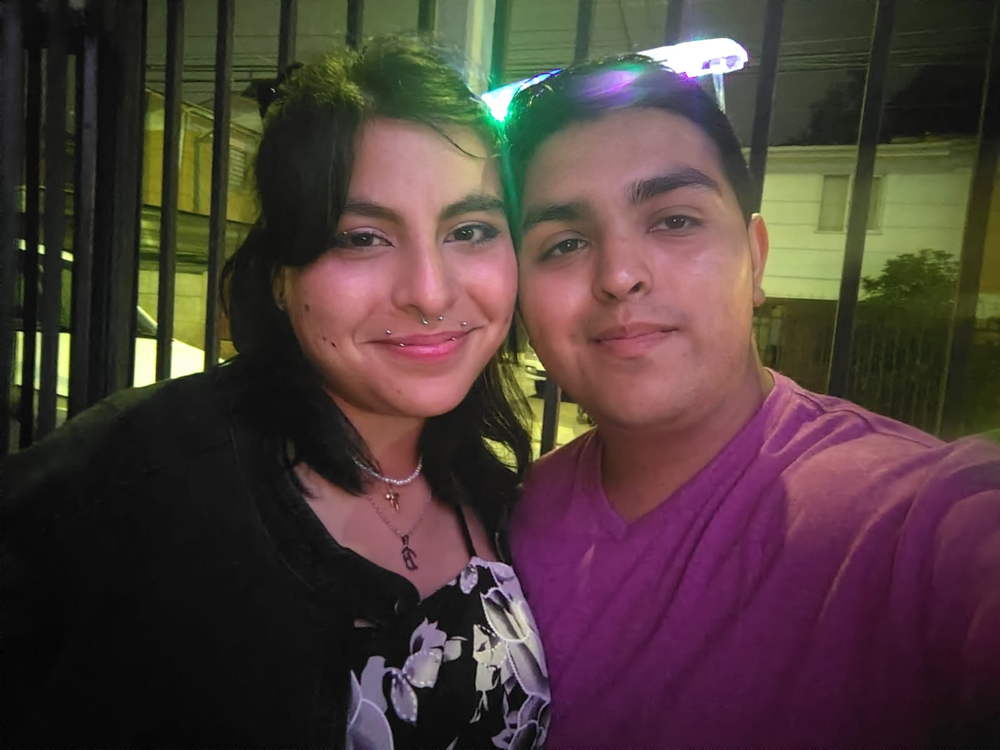
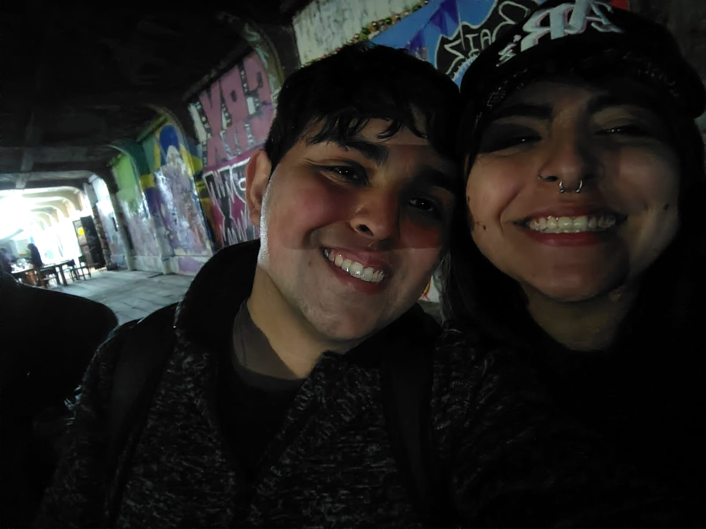
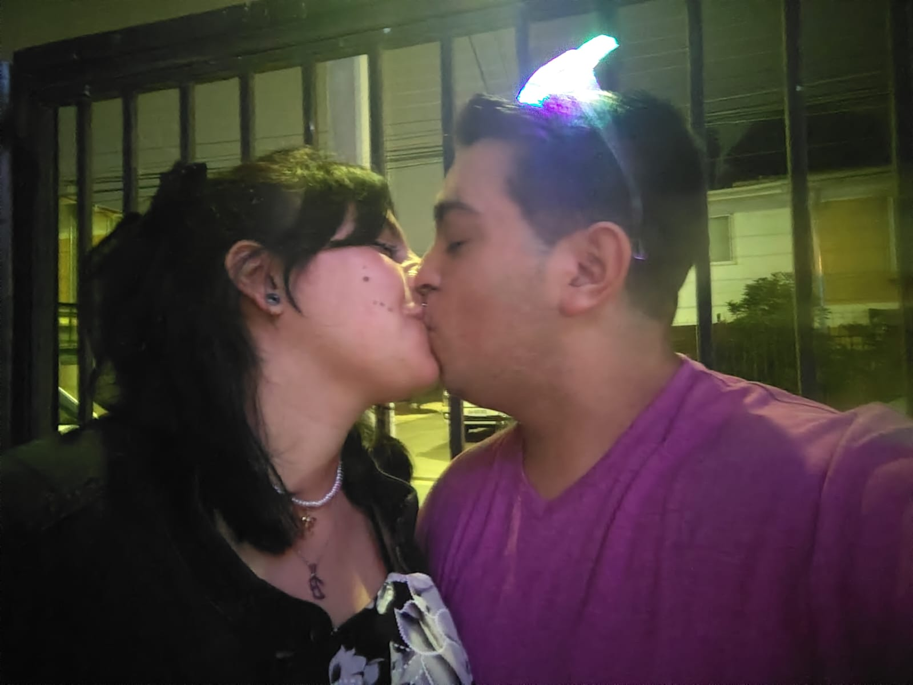
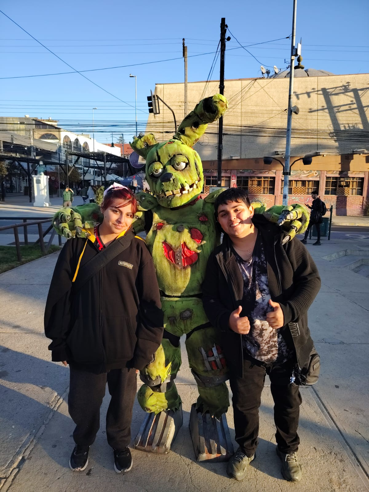
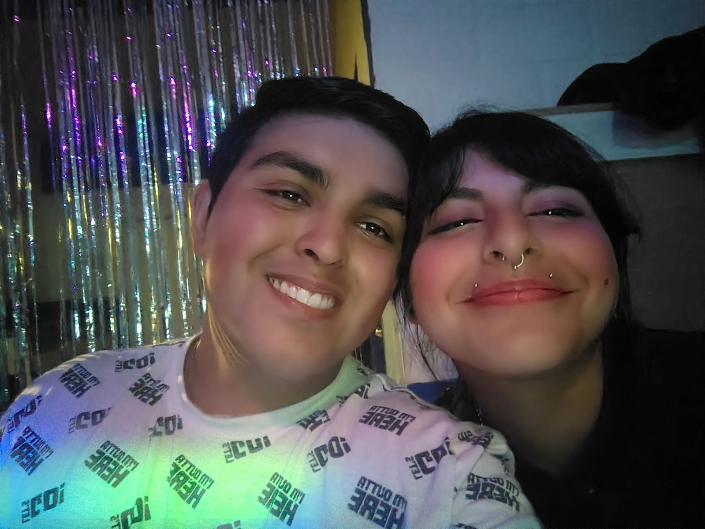

Mi amor, se que mi cabeza es difícil de entender y pareciera que estoy loco, pero estoy loco por uste, uste crea una chispa en mi corazón la cual hace un incendio en mi cuerpo y no quiero que ese fuego que uste me genera se apague, si tengo que arreglar las cosas con uste mil veces, esas mil veces lo voy a hacer, uste vale totalmente la pena, eres, eras y siempre serás mi niña hermosa, mi bb, mi luz, mi oscuridad, mi princesa y mi todo en esta vida, realmente no puedo imaginar una vida si no es con uste a mi lado y no quiero saber como sería una vida así, voy a tratar de enamorale una y mil veces si es necesario, quiero que uste sea mi amor eterno y que uste me siga eligiendo sobre todo, el amor que tengo por uste no existe forma de porder describirlo, pero ese amor es totalmente suyo, quiero que seas solamente tu quien pueda encenderme, amarme, tocarme, mirarme y desearme. Existen muchas mujeres en el mundo pero yo te elijo a ti, solamente a ti y espero pueda entender eso mi amor🤍.
La amodoro mucho mucho mi wawita preciosa🤍




